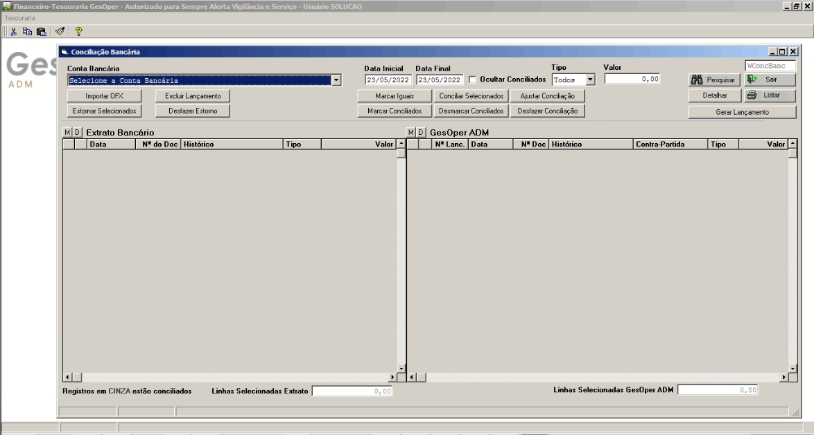

Conciliação Bancária
Validação e controle de lançamentos bancários
O que é a Conciliação Bancária?
Toda vez que uma conta banco é movimentada através do fluxo de caixa, ela mantém um registro dentro do módulo administrativo para posterior validação junto ao arquivo de extrato (OFX) gerado a partir do banco. Esse processo de validação de lançamentos chamamos de conciliação bancária.
Definição Técnica
A conciliação bancária é o processo de comparação entre os registros contábeis da empresa e os extratos bancários, identificando e justificando as diferenças existentes entre ambos os saldos.
Processo de Conciliação
Definir Período
Configure as datas inicial e final nos campos correspondentes
Importar Arquivo OFX
Baixe o arquivo OFX (Open Financial Exchange) do internet banking e importe no sistema através do botão "Importar OFX"
Pesquisar
Clique em "Pesquisar" para carregar os dados do período selecionado
Análise e Conciliação
Compare os lançamentos do extrato bancário com os registros do sistema, identificando divergências e realizando os ajustes necessários
Layout da Tela de Conciliação
Painel Esquerdo - Extrato Bancário
Apresenta os lançamentos importados do arquivo OFX, mostrando data, histórico, valor e status de conciliação
Painel Direito - Sistema GesOper
Exibe os lançamentos registrados no fluxo de caixa interno, permitindo comparação e conciliação com o extrato bancário
Tipos de Conciliação
Conciliação Automática
O sistema identifica automaticamente lançamentos com valores e datas idênticos
Conciliação Manual
Permite ao usuário selecionar e conciliar lançamentos manualmente
Ajuste de Conciliação
Corrige pequenas diferenças de centavos entre lançamentos
Tela do Sistema
Situações Especiais na Conciliação
Lançamentos Não Localizados
Quando um lançamento existe no extrato mas não no sistema, deve-se verificar se foi registrado corretamente no fluxo de caixa
Diferenças de Valores
Pequenas diferenças podem ocorrer devido a arredondamentos ou taxas. Use a função de ajuste para corrigi-las
Lançamentos Futuros
Lançamentos com data futura no sistema devem ser verificados quanto à sua real efetivação no banco